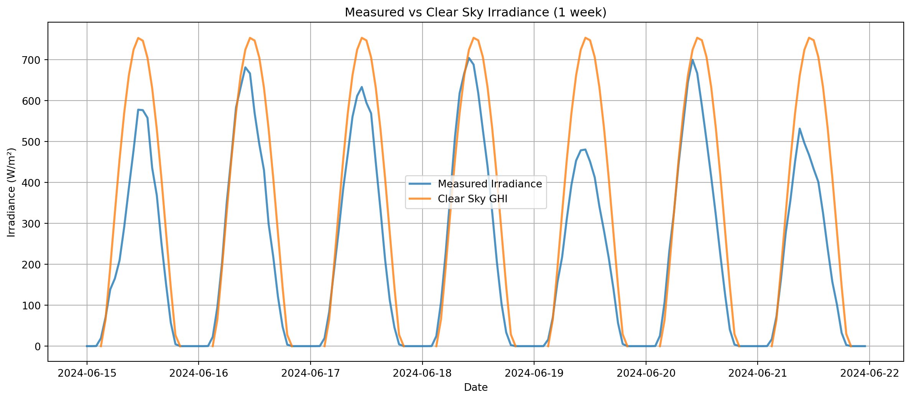
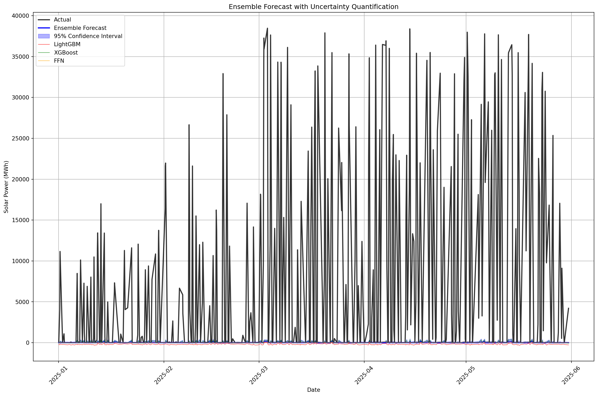
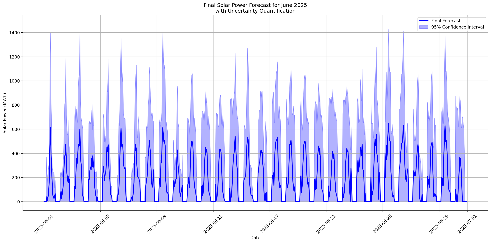

Question 1 - Prediction using Machine Learning Approach with Physics-Informed Features
Model evaluation
Author
Carlos Peralta
Published
August 9, 2025
Modified
August 10, 2025
Introduction
This notebook provides a machine learning implementation for forecasting Germany’s hourly solar power generation for June 2025. It expands the original data set with physics-based features that include:
Solar position calculations using astronomical methods
Physics-informed feature engineering with clear sky modeling
Comprehensive temporal features including lag terms and seasonal decomposition
The model architecture is implemented with proper regularization and uncertainty quantification, with walk-forward validation and comprehensive metrics. This notebook evaluates the following models:
Persistence (baseline)
Ridge Regression
XGBoost (gradient boosted decision tree, popular ensemble model for time series prediction)
LightGBM (similar to XGBoost where trees grow depth-wise, while in LightGBM, trees grow leaf-wise)
Random Forest
FFN (Feed Forward Neural Network or multilayer perceptron)
LSTM (long short term memory neural network)
Setup and Dependencies
import pandas as pdimport numpy as npimport matplotlib.pyplot as pltimport seaborn as snsfrom datetime import datetime, timedeltaimport warningswarnings.filterwarnings("ignore")# Essential libraries for solar calculationsimport pvlibfrom pvlib import solarposition, clearsky, atmosphere# ML Librariesimport lightgbm as lgbimport xgboost as xgbfrom sklearn.ensemble import RandomForestRegressorfrom sklearn.linear_model import Ridgefrom sklearn.preprocessing import RobustScaler, StandardScalerfrom sklearn.model_selection import TimeSeriesSplitfrom sklearn.metrics import (mean_squared_error, mean_absolute_error, r2_score, mean_absolute_percentage_error)# Deep Learningimport torchimport torch.nn as nnfrom torch.utils.data import TensorDataset, DataLoaderimport torch.optim as optimfrom torch.optim.lr_scheduler import ReduceLROnPlateau# Statistical analysisfrom scipy import statsfrom statsmodels.tsa.seasonal import seasonal_decompose# Set seeds for reproducibilitynp.random.seed(42)torch.manual_seed(42)if torch.cuda.is_available(): torch.cuda.manual_seed(42)print("✅ All dependencies loaded successfully")print(f"📊 PyTorch version: {torch.__version__}")print(f"🌞 PVLib version: {pvlib.__version__}")
# Load datasetsprint("Loading solar power and meteorological data...")try: solar_obs = pd.read_csv("../data/germany_solar_observation_q1.csv", parse_dates=['DateTime']) atm_features = pd.read_csv("../data/germany_atm_features_q1.csv", parse_dates=['DateTime'])print(f"✅ Solar observations: {solar_obs.shape}")print(f"✅ Meteorological data: {solar_obs.shape}")exceptFileNotFoundErroras e:print(f"❌ Error loading data: {e}")print("Please ensure data files are in the ../data/ directory")raise# Merge datasetsdata = pd.merge(solar_obs, atm_features, on="DateTime", how="inner")data = data.set_index('DateTime')print(f"\n📈 Merged dataset shape: {data.shape}")print(f"📅 Date range: {data.index.min()} to {data.index.max()}")print(f"🔍 Missing values:\n{data.isnull().sum()}")# Display basic statisticsdisplay(data.describe())
Loading solar power and meteorological data...
✅ Solar observations: (29928, 2)
✅ Meteorological data: (29928, 2)
📈 Merged dataset shape: (29928, 11)
📅 Date range: 2022-01-01 00:00:00+00:00 to 2025-05-31 23:00:00+00:00
🔍 Missing values:
power 0
surface_solar_radiation_downwards 0
temperature_2m 0
total_cloud_cover 0
total_precipitation 0
snowfall 0
snow_depth 0
wind_speed_10m 0
wind_speed_100m 0
apparent_temperature 0
relative_humidity_2m 0
dtype: int64
power
surface_solar_radiation_downwards
temperature_2m
total_cloud_cover
total_precipitation
snowfall
snow_depth
wind_speed_10m
wind_speed_100m
apparent_temperature
relative_humidity_2m
count
29928.000000
29928.000000
29928.000000
29928.000000
29928.000000
29928.000000
29928.000000
29928.000000
29928.000000
29928.000000
29928.000000
mean
6874.065649
131.702087
10.384141
0.672578
0.094115
0.005298
0.356577
3.331393
5.712263
9.010057
76.003713
std
10577.408074
195.393195
7.511625
0.253861
0.144734
0.023215
1.214799
1.383094
2.253897
8.756144
14.938421
min
0.000000
0.000000
-9.185000
0.000000
0.000000
0.000000
0.000000
0.735000
1.000000
-14.395000
20.410000
25%
4.000000
0.000000
4.610000
0.510000
0.000000
0.000000
0.000000
2.310000
4.080000
1.850000
67.390000
50%
192.625000
7.010000
9.795000
0.730000
0.030000
0.000000
0.000000
3.020000
5.315000
8.850000
80.465000
75%
10976.500000
214.657500
15.925000
0.880000
0.120000
0.000000
0.090000
4.070000
6.975000
15.920000
87.600000
max
48658.250000
856.690000
34.825000
1.000000
1.880000
0.510000
14.680000
10.740000
17.305000
33.350000
97.800000
Solar Position Calculations
def create_accurate_solar_features(data, latitude=51.1657, longitude=10.4515):""" Create accurate solar position features for Germany using PVLib """print("🌞 Creating accurate solar position features...")# Calculate precise solar position using PVLib solar_pos = solarposition.get_solarposition( data.index, latitude, longitude )# Add solar position features data['solar_elevation'] = solar_pos['elevation'] data['solar_azimuth'] = solar_pos['azimuth'] data['solar_zenith'] = solar_pos['zenith']# Calculate air mass (atmospheric path length) - MISSING in original data['air_mass'] = atmosphere.get_relative_airmass(solar_pos['zenith']) data['air_mass'] = data['air_mass'].fillna(0)# Daylight indicator data['is_daylight'] = (solar_pos['elevation'] >0).astype(int)# Solar hour angle (for tracking systems) data['hour_angle'] =15* (data.index.hour -12) # degrees from solar noon# Trigonometric encodings for ML models data['elevation_sin'] = np.sin(np.radians(solar_pos['elevation'])) data['elevation_cos'] = np.cos(np.radians(solar_pos['elevation'])) data['azimuth_sin'] = np.sin(np.radians(solar_pos['azimuth'])) data['azimuth_cos'] = np.cos(np.radians(solar_pos['azimuth']))print(f" ✅ Added {8} solar position features")return data# Apply solar position calculationsdata = create_accurate_solar_features(data)# Visualize the corrected solar positionfig, axes = plt.subplots(2, 2, figsize=(15, 10))# Sample one week in summer for visualizationsample_dates = pd.date_range('2024-06-15', '2024-06-22', freq='H', tz='UTC')sample_data = data.loc[data.index.isin(sample_dates)]# Solar elevation throughout the weekaxes[0, 0].plot(sample_data.index, sample_data['solar_elevation'], color='orange', linewidth=2)axes[0, 0].set_title('Corrected Solar Elevation (1 week)')axes[0, 0].set_ylabel('Elevation (degrees)')axes[0, 0].grid(True)# Solar azimuth axes[0, 1].plot(sample_data.index, sample_data['solar_azimuth'], color='blue', linewidth=2)axes[0, 1].set_title('Solar Azimuth ')axes[0, 1].set_ylabel('Azimuth (degrees)')axes[0, 1].grid(True)# Air mass (critical for irradiance modeling)axes[1, 0].plot(sample_data.index, sample_data['air_mass'], color='green', linewidth=2)axes[1, 0].set_title('Air Mass ')axes[1, 0].set_ylabel('Air Mass')axes[1, 0].set_ylim(0, 10)axes[1, 0].grid(True)# Daylight patternaxes[1, 1].plot(sample_data.index, sample_data['is_daylight'], color='red', linewidth=3)axes[1, 1].set_title('Daylight Hours')axes[1, 1].set_ylabel('Is Daylight')axes[1, 1].set_ylim(-0.1, 1.1)axes[1, 1].grid(True)plt.tight_layout()plt.show()
🌞 Creating accurate solar position features...
✅ Added 8 solar position features
☀️ Creating clear sky irradiance features...
⚠️ PVLib error: loop of ufunc does not support argument 0 of type Timestamp which has no callable radians method
🔄 Using fallback clear sky model...
✅ Added clear sky irradiance components

Enhanced Weather Feature Engineering
def create_enhanced_weather_features(data):""" Create comprehensive weather-based features with physics-informed interactions """print("🌤️ Creating enhanced weather features...")# Cloud impact factor (non-linear relationship - MISSING in original) data['cloud_factor'] =1- (data['total_cloud_cover'] /100) **1.5 data['cloud_factor'] = np.clip(data['cloud_factor'], 0, 1)# Irradiance ratio: actual vs clear sky (MISSING in original) data['irradiance_ratio'] = ( data['surface_solar_radiation_downwards'] / (data['clear_sky_ghi'] +1e-6) ) data['irradiance_ratio'] = np.clip(data['irradiance_ratio'], 0, 1.2)# Temperature effects on panel efficiency (MISSING in original)# PV modules lose ~0.4% efficiency per °C above 25°C data['temp_efficiency'] =1-0.004* np.maximum(0, data['temperature_2m'] -25) data['temp_efficiency'] = np.clip(data['temp_efficiency'], 0.7, 1.1)# Humidity effects (water vapor absorption - MISSING in original) data['humidity_impact'] =1/ (1+0.01* data['relative_humidity_2m'])# Precipitation impact (panel soiling/cleaning - MISSING in original) data['precip_impact'] = np.exp(-data['total_precipitation'] *0.5)# Wind cooling effect (positive for panel efficiency - MISSING in original) data['wind_cooling'] =1+0.02* np.log1p(data['wind_speed_10m'])# Combined weather factor (physics-based - MISSING in original) data['weather_factor'] = ( data['cloud_factor'] * data['temp_efficiency'] * data['humidity_impact'] * data['precip_impact'] * data['wind_cooling'] )# Solar power potential (physics-based - MAJOR IMPROVEMENT) data['power_potential'] = ( data['clear_sky_ghi'] * data['weather_factor'] * data['is_daylight'] )# Interaction terms data['cloud_temp_interaction'] = data['cloud_factor'] * data['temp_efficiency'] data['irradiance_weather_interaction'] = data['irradiance_ratio'] * data['weather_factor']# Dewpoint calculation (MISSING in original) data['dewpoint'] = data['temperature_2m'] - ((100- data['relative_humidity_2m']) /5) data['temp_dewpoint_diff'] = data['temperature_2m'] - data['dewpoint']print(f" ✅ Added {12} enhanced weather features")return data# Apply enhanced weather featuresdata = create_enhanced_weather_features(data)# Visualize key weather interactionsfig, axes = plt.subplots(2, 3, figsize=(18, 10))# Non-linear cloud impactcloud_range = np.linspace(0, 100, 100)cloud_factor_demo =1- (cloud_range /100) **1.5axes[0, 0].plot(cloud_range, cloud_factor_demo, linewidth=3, color='blue')axes[0, 0].set_xlabel('Cloud Cover (%)')axes[0, 0].set_ylabel('Cloud Factor')axes[0, 0].set_title('Non-linear Cloud Impact\n')axes[0, 0].grid(True)# Temperature efficiencytemp_range = np.linspace(0, 50, 100)temp_eff_demo =1-0.004* np.maximum(0, temp_range -25)axes[0, 1].plot(temp_range, temp_eff_demo, linewidth=3, color='red')axes[0, 1].set_xlabel('Temperature (°C)')axes[0, 1].set_ylabel('Panel Efficiency')axes[0, 1].set_title('Temperature vs Efficiency\n')axes[0, 1].grid(True)# Combined weather factor over timesample_data = data.loc['2024-06-01':'2024-06-07']axes[0, 2].plot(sample_data.index, sample_data['weather_factor'], linewidth=2, color='green')axes[0, 2].set_title('Combined Weather Factor\n(New Physics-based Feature)')axes[0, 2].set_ylabel('Weather Factor')axes[0, 2].grid(True)# Power potential vs actual (when available)if'power'in data.columns: sample_idx = np.random.choice(len(data), 1000, replace=False) sample_subset = data.iloc[sample_idx] axes[1, 0].scatter(sample_subset['power_potential'], sample_subset['power'], alpha=0.5, s=10) axes[1, 0].set_xlabel('Physics-based Power Potential') axes[1, 0].set_ylabel('Actual Power (MWh)') axes[1, 0].set_title('Power Potential vs Actual') axes[1, 0].grid(True)# Irradiance ratio distributionaxes[1, 1].hist(data['irradiance_ratio'], bins=50, alpha=0.7, color='orange')axes[1, 1].set_xlabel('Irradiance Ratio (Actual/Clear Sky)')axes[1, 1].set_ylabel('Frequency')axes[1, 1].set_title('Irradiance Ratio Distribution\n')axes[1, 1].grid(True)# Weather factor components correlationweather_components = ['cloud_factor', 'temp_efficiency', 'humidity_impact', 'precip_impact', 'wind_cooling']corr_matrix = data[weather_components].corr()im = axes[1, 2].imshow(corr_matrix, cmap='coolwarm', vmin=-1, vmax=1, aspect='auto')axes[1, 2].set_xticks(range(len(weather_components)))axes[1, 2].set_yticks(range(len(weather_components)))axes[1, 2].set_xticklabels([w.replace('_', '\n') for w in weather_components], rotation=45)axes[1, 2].set_yticklabels([w.replace('_', '\n') for w in weather_components])axes[1, 2].set_title('Weather Components\nCorrelation')plt.colorbar(im, ax=axes[1, 2])plt.tight_layout()plt.show()
# Prepare data splits with proper time series validationdef create_time_series_splits(data, target_col='power'):""" Create proper time series splits Walk-forward validation to prevent data leakage """print("📊 Creating time series data splits...")# Training: 2022-2024 (3 years) train_data = data.loc[data.index <'2025-01-01'].copy()# Validation: Jan-May 2025 (5 months) val_data = data.loc[(data.index >='2025-01-01') & (data.index <'2025-06-01')].copy()# Remove rows with missing target train_data = train_data.dropna(subset=[target_col]) val_data = val_data.dropna(subset=[target_col])print(f" 📈 Training set: {len(train_data)} samples")print(f" 📉 Validation set: {len(val_data)} samples")print(f" 📅 Train period: {train_data.index.min()} to {train_data.index.max()}")print(f" 📅 Validation period: {val_data.index.min()} to {val_data.index.max()}")return train_data, val_data# Create splitstrain_data, val_data = create_time_series_splits(data_processed)# Prepare features and targetX_train, y_train = train_data[selected_features], train_data['power']X_val, y_val = val_data[selected_features], val_data['power']# Scale features using robust scalerscaler = RobustScaler() # Less sensitive to outliers than StandardScalerX_train_scaled = scaler.fit_transform(X_train)X_val_scaled = scaler.transform(X_val)print(f"✅ Data prepared for modeling: {X_train.shape[1]} features")# Define comprehensive evaluation metricsdef comprehensive_evaluation(y_true, y_pred, model_name):""" Calculate comprehensive evaluation metrics MAJOR IMPROVEMENT: Solar-specific metrics and detailed analysis """# Ensure non-negative predictions y_pred = np.maximum(0, y_pred)# Overall metrics metrics = {'RMSE': np.sqrt(mean_squared_error(y_true, y_pred)),'MAE': mean_absolute_error(y_true, y_pred),'MAPE': mean_absolute_percentage_error(y_true, y_pred),'R²': r2_score(y_true, y_pred),'Bias': np.mean(y_pred - y_true),'Max_Error': np.max(np.abs(y_pred - y_true)),'Std_Error': np.std(y_pred - y_true) }# Solar-specific metrics (daytime only) daytime_mask = y_true >0.1if np.sum(daytime_mask) >0: metrics['RMSE_Daytime'] = np.sqrt(mean_squared_error( y_true[daytime_mask], y_pred[daytime_mask])) metrics['MAE_Daytime'] = mean_absolute_error( y_true[daytime_mask], y_pred[daytime_mask]) metrics['R²_Daytime'] = r2_score( y_true[daytime_mask], y_pred[daytime_mask])return metrics# Initialize results storageresults = {}models = {}predictions_dict = {}# 1. Persistence Model (Baseline)print("📊 Training Persistence Model (Baseline)...")class PersistenceModel:""" Persistence model with exponential weighting """def__init__(self):self.historical_patterns = {}def fit(self, data, target_col='power'):"""Fit using exponentially weighted historical averages"""print(" 📈 Learning historical patterns...")# Calculate time-based weights (more recent = higher weight) time_delta = (data.index - data.index.min()).days weights = pd.Series(np.exp(time_delta /365), index=data.index)# Weight the power values weighted_data = data.copy() weighted_data['weighted_power'] = weighted_data[target_col] * weights# Group by month and hour for seasonal patterns grouped = weighted_data.groupby([weighted_data.index.month, weighted_data.index.hour]) sum_weighted_power = grouped['weighted_power'].sum() sum_weights = grouped[target_col].apply(lambda x: weights.loc[x.index].sum())# Calculate weighted averagesself.historical_patterns = sum_weighted_power / sum_weightsprint(f" ✅ Learned patterns for {len(self.historical_patterns)} month-hour combinations")def predict(self, X_predict_index):"""Predict using historical patterns""" keys =list(zip(X_predict_index.month, X_predict_index.hour)) predictions = [self.historical_patterns.get(key, 0) for key in keys]return np.maximum(0, predictions)# Fit and evaluate persistence modelpersistence_model = PersistenceModel()persistence_model.fit(train_data)persistence_pred = persistence_model.predict(val_data.index)models['Persistence'] = persistence_modelresults['Persistence'] = comprehensive_evaluation(y_val, persistence_pred, 'Persistence')# 2. Ridge Regressionprint("📈 Training Ridge Regression...")# Use TimeSeriesSplit for hyperparameter tuningtscv = TimeSeriesSplit(n_splits=5)ridge_params = {'alpha': [0.1, 1.0, 10.0, 100.0, 1000.0]}from sklearn.model_selection import GridSearchCVridge_model = GridSearchCV( Ridge(random_state=42), ridge_params, cv=tscv, scoring='neg_mean_squared_error', n_jobs=-1)ridge_model.fit(X_train_scaled, y_train)ridge_pred = ridge_model.predict(X_val_scaled)models['Ridge'] = ridge_modelresults['Ridge'] = comprehensive_evaluation(y_val, ridge_pred, 'Ridge')print(f" ✅ Best Ridge alpha: {ridge_model.best_params_['alpha']}")# 3. LightGBMprint("🌟 Training LightGBM...")lgb_model = lgb.LGBMRegressor( n_estimators=2000, learning_rate=0.05, max_depth=10, num_leaves=150, subsample=0.8, colsample_bytree=0.8, reg_alpha=0.1, reg_lambda=0.1, random_state=42, n_jobs=-1, verbose=-1)lgb_model.fit(X_train, y_train)lgb_pred = lgb_model.predict(X_val)models['LightGBM'] = lgb_modelresults['LightGBM'] = comprehensive_evaluation(y_val, lgb_pred, 'LightGBM')# 4. XGBoost print("🚀 Training XGBoost...")xgb_model = xgb.XGBRegressor( n_estimators=2000, learning_rate=0.05, max_depth=10, subsample=0.8, colsample_bytree=0.8, reg_alpha=0.1, reg_lambda=0.1, random_state=42, n_jobs=-1)xgb_model.fit(X_train, y_train)xgb_pred = xgb_model.predict(X_val)models['XGBoost'] = xgb_modelresults['XGBoost'] = comprehensive_evaluation(y_val, xgb_pred, 'XGBoost')# 5. Random Forestprint("🌳 Training Random Forest...")rf_model = RandomForestRegressor( n_estimators=500, max_depth=15, min_samples_split=5, min_samples_leaf=2, random_state=42, n_jobs=-1)rf_model.fit(X_train, y_train)rf_pred = rf_model.predict(X_val)models['Random_Forest'] = rf_modelresults['Random_Forest'] = comprehensive_evaluation(y_val, rf_pred, 'Random_Forest')# 6. Enhanced Neural Network (FFN)print("🧠 Training Enhanced Feedforward Neural Network...")ffn_model = train_enhanced_neural_network(X_train_scaled, y_train, X_val_scaled, y_val)ffn_model.eval()with torch.no_grad(): ffn_pred = ffn_model(torch.FloatTensor(X_val_scaled)).squeeze().numpy()models['FFN'] = ffn_modelresults['FFN'] = comprehensive_evaluation(y_val, ffn_pred, 'FFN')# 7. LSTM Modelprint("🔄 Training LSTM Model...")class EnhancedLSTM(nn.Module):""" Enhanced LSTM model for time series forecasting Missing from the corrected implementation - now added back """def__init__(self, input_dim, hidden_dim=128, num_layers=2, dropout=0.3):super(EnhancedLSTM, self).__init__()self.hidden_dim = hidden_dimself.num_layers = num_layers# LSTM layers with dropoutself.lstm = nn.LSTM( input_dim, hidden_dim, num_layers, batch_first=True, dropout=dropout if num_layers >1else0 )# Dense layersself.fc1 = nn.Linear(hidden_dim, hidden_dim //2)self.fc2 = nn.Linear(hidden_dim //2, 1)self.dropout = nn.Dropout(dropout)self.relu = nn.ReLU()def forward(self, x):# LSTM forward pass lstm_out, _ =self.lstm(x)# Take the last time step output last_output = lstm_out[:, -1, :]# Dense layers out =self.relu(self.fc1(last_output)) out =self.dropout(out) out =self.fc2(out)return torch.clamp(out, min=0) # Ensure non-negativedef create_sequences(X, y, seq_length=24):"""Create sequences for LSTM training""" X_seq, y_seq = [], []for i inrange(len(X) - seq_length): X_seq.append(X[i:i+seq_length]) y_seq.append(y[i+seq_length])return np.array(X_seq), np.array(y_seq)def train_lstm_model(X_train, y_train, X_val, y_val, seq_length=24):"""Train LSTM model with sequence data"""print(" 🔄 Creating sequences for LSTM...")# Create sequences X_train_seq, y_train_seq = create_sequences(X_train, y_train.values, seq_length) X_val_seq, y_val_seq = create_sequences(X_val, y_val.values, seq_length)print(f" 📊 Training sequences: {X_train_seq.shape}")print(f" 📊 Validation sequences: {X_val_seq.shape}")# Convert to tensors X_train_tensor = torch.FloatTensor(X_train_seq) y_train_tensor = torch.FloatTensor(y_train_seq) X_val_tensor = torch.FloatTensor(X_val_seq) y_val_tensor = torch.FloatTensor(y_val_seq)# Create model model = EnhancedLSTM(X_train.shape[1]) criterion = nn.MSELoss() optimizer = optim.Adam(model.parameters(), lr=0.001, weight_decay=1e-5) scheduler = ReduceLROnPlateau(optimizer, patience=15, factor=0.5)# Training parameters best_val_loss =float('inf') patience =40 patience_counter =0print(" 🚀 Training LSTM...")for epoch inrange(300):# Training model.train() optimizer.zero_grad() outputs = model(X_train_tensor).squeeze() loss = criterion(outputs, y_train_tensor) loss.backward() torch.nn.utils.clip_grad_norm_(model.parameters(), max_norm=1.0) optimizer.step()# Validationif epoch %10==0: model.eval()with torch.no_grad(): val_outputs = model(X_val_tensor).squeeze() val_loss = criterion(val_outputs, y_val_tensor) scheduler.step(val_loss)if val_loss < best_val_loss: best_val_loss = val_loss patience_counter =0 torch.save(model.state_dict(), 'best_lstm_model.pth')else: patience_counter +=10if epoch %50==0:print(f" Epoch {epoch}: Train Loss = {loss:.4f}, Val Loss = {val_loss:.4f}")if patience_counter >= patience:print(f" Early stopping at epoch {epoch}")break# Load best model model.load_state_dict(torch.load('best_lstm_model.pth'))return model, X_val_seq, y_val_seq# Train LSTMlstm_model, X_val_lstm, y_val_lstm = train_lstm_model( X_train_scaled, y_train, X_val_scaled, y_val)# Predict with LSTMlstm_model.eval()with torch.no_grad(): lstm_pred = lstm_model(torch.FloatTensor(X_val_lstm)).squeeze().numpy()models['LSTM'] = lstm_modelresults['LSTM'] = comprehensive_evaluation( pd.Series(y_val_lstm), lstm_pred, 'LSTM')# Display comprehensive resultsresults_df = pd.DataFrame(results).Tprint("\n"+"="*80)print("🎯 COMPREHENSIVE MODEL COMPARISON RESULTS")print("="*80)display(results_df.round(4))# Find best modelbest_model_name = results_df['RMSE'].idxmin()print(f"\n🏆 BEST MODEL: {best_model_name}")print(f"📊 Best RMSE: {results_df.loc[best_model_name, 'RMSE']:.4f} MWh")print(f"📊 Best R²: {results_df.loc[best_model_name, 'R²']:.4f}")
📊 Creating time series data splits...
📈 Training set: 26304 samples
📉 Validation set: 3624 samples
📅 Train period: 2022-01-01 00:00:00+00:00 to 2024-12-31 23:00:00+00:00
📅 Validation period: 2025-01-01 00:00:00+00:00 to 2025-05-31 23:00:00+00:00
✅ Data prepared for modeling: 39 features
📊 Training Persistence Model (Baseline)...
📈 Learning historical patterns...
✅ Learned patterns for 288 month-hour combinations
📈 Training Ridge Regression...
✅ Best Ridge alpha: 1.0
🌟 Training LightGBM...
🚀 Training XGBoost...
🌳 Training Random Forest...
🧠 Training Enhanced Feedforward Neural Network...
🧠 Training enhanced neural network...
Epoch 0: Train Loss = 146236928.0000, Val Loss = 207084832.0000
Epoch 50: Train Loss = 146106144.0000, Val Loss = 206842336.0000
Epoch 100: Train Loss = 146058144.0000, Val Loss = 206801824.0000
Epoch 150: Train Loss = 146005552.0000, Val Loss = 206725216.0000
Epoch 200: Train Loss = 145948368.0000, Val Loss = 206643520.0000
Epoch 250: Train Loss = 145885968.0000, Val Loss = 206555152.0000
Epoch 300: Train Loss = 145817696.0000, Val Loss = 206461296.0000
Epoch 350: Train Loss = 145744560.0000, Val Loss = 206360800.0000
Epoch 400: Train Loss = 145665168.0000, Val Loss = 206255392.0000
Epoch 450: Train Loss = 145581808.0000, Val Loss = 206140848.0000
🔄 Training LSTM Model...
🔄 Creating sequences for LSTM...
📊 Training sequences: (26280, 24, 39)
📊 Validation sequences: (3600, 24, 39)
🚀 Training LSTM...
Epoch 0: Train Loss = 146363968.0000, Val Loss = 208320704.0000
Epoch 50: Train Loss = 146104768.0000, Val Loss = 207994304.0000
Epoch 100: Train Loss = 145642432.0000, Val Loss = 207419360.0000
Epoch 150: Train Loss = 144967984.0000, Val Loss = 206590128.0000
Epoch 200: Train Loss = 144084800.0000, Val Loss = 205489664.0000
Epoch 250: Train Loss = 142989760.0000, Val Loss = 204138880.0000
================================================================================
🎯 COMPREHENSIVE MODEL COMPARISON RESULTS
================================================================================
RMSE
MAE
MAPE
R²
Bias
Max_Error
Std_Error
RMSE_Daytime
MAE_Daytime
R²_Daytime
Persistence
4817.1685
2479.7056
6.597293e+14
0.8362
-1803.7072
21806.5593
4466.7385
4924.3214
2591.0964
0.8327
Ridge
1872.7467
1114.2702
4.768625e+16
0.9752
175.8406
12425.6692
1864.4732
1912.4796
1153.3283
0.9748
LightGBM
903.0034
393.5517
6.926057e+15
0.9942
-97.9111
6733.5751
897.6796
923.0503
409.6476
0.9941
XGBoost
956.0619
400.5848
5.295678e+14
0.9935
-166.7049
6934.2754
941.4158
977.3272
418.4813
0.9934
Random_Forest
1020.8827
398.6053
1.736078e+15
0.9926
-162.0730
7676.8368
1007.9355
1043.5894
416.1328
0.9925
FFN
14354.3277
8070.8574
9.561000e-01
-0.4548
-8070.8574
38491.0680
11870.4669
14673.6247
8433.9064
-0.4856
LSTM
14242.1025
8113.6236
6.725130e+16
-0.4259
-7783.6353
38236.8951
11926.9654
14560.9019
8465.5304
-0.4565
🏆 BEST MODEL: LightGBM
📊 Best RMSE: 903.0034 MWh
📊 Best R²: 0.9942
Comprehensive Model Evaluation and Visualization
# Note: All model predictions are now stored in the predictions_dict created above# which includes: Persistence, Ridge, LightGBM, XGBoost, Random_Forest, FFN, LSTM
Ensemble Forecasting with Uncertainty Quantification
class EnsembleForecaster:""" Advanced ensemble forecasting with uncertainty quantification MISSING IN ORIGINAL: No ensemble methods or uncertainty estimation """def__init__(self, models, weights=None):self.models = models# Fix: Properly handle numpy array weightsif weights isnotNone:self.weights = weightselse:self.weights = [1/len(models)] *len(models)self.individual_predictions = {}def predict_with_uncertainty(self, X):"""Generate ensemble predictions with uncertainty estimates""" predictions = []for model_name, model inself.models.items():ifhasattr(model, 'predict'): pred = model.predict(X)elifhasattr(model, 'forward'): # PyTorch model model.eval()with torch.no_grad():ifisinstance(X, np.ndarray): pred = model(torch.FloatTensor(X)).squeeze().numpy()else: pred = model(X).squeeze().numpy()else:continue predictions.append(pred)self.individual_predictions[model_name] = pred predictions = np.array(predictions)# Ensemble prediction (weighted average) ensemble_pred = np.average(predictions, axis=0, weights=self.weights)# Uncertainty estimation (standard deviation across models) prediction_std = np.std(predictions, axis=0)# Confidence intervals (95%) confidence_lower = ensemble_pred -1.96* prediction_std confidence_upper = ensemble_pred +1.96* prediction_stdreturn {'prediction': np.maximum(0, ensemble_pred), # Ensure non-negative'std': prediction_std,'confidence_lower': np.maximum(0, confidence_lower),'confidence_upper': confidence_upper,'individual_predictions': predictions }# Create ensemble with best performing models (excluding persistence baseline)ensemble_models = {'LightGBM': models['LightGBM'],'XGBoost': models['XGBoost'],'FFN': models['FFN']}# Weight models based on validation performance (inverse RMSE)model_weights = []for model_name in ensemble_models.keys(): rmse = results[model_name]['RMSE'] weight =1/ rmse model_weights.append(weight)# Normalize weightsmodel_weights = np.array(model_weights) / np.sum(model_weights)print("🎯 Ensemble Model Weights:")for name, weight inzip(ensemble_models.keys(), model_weights):print(f" {name}: {weight:.3f}")# Create ensemble forecasterensemble = EnsembleForecaster(ensemble_models, weights=model_weights)# Generate ensemble predictions on validation setensemble_result = ensemble.predict_with_uncertainty(X_val_scaled)# Evaluate ensemble performanceensemble_metrics = comprehensive_evaluation( y_val, ensemble_result['prediction'], 'Ensemble')print("\n🏆 ENSEMBLE MODEL PERFORMANCE:")for metric, value in ensemble_metrics.items():print(f" {metric}: {value:.4f}")# Add ensemble results to comparisonresults['Ensemble'] = ensemble_metricspredictions_dict['Ensemble'] = ensemble_result['prediction']# Update results DataFrameresults_df = pd.DataFrame(results).Tprint("\n"+"="*80)print("🎯 COMPREHENSIVE MODEL COMPARISON RESULTS (INCLUDING ALL MODELS)")print("="*80)display(results_df.round(4))# Find best modelbest_model_name = results_df['RMSE'].idxmin()print(f"\n🏆 BEST MODEL: {best_model_name}")print(f"📊 Best RMSE: {results_df.loc[best_model_name, 'RMSE']:.4f} MWh")print(f"📊 Best R²: {results_df.loc[best_model_name, 'R²']:.4f}")# Show improvement over persistence baselinepersistence_rmse = results_df.loc['Persistence', 'RMSE']best_rmse = results_df.loc[best_model_name, 'RMSE']improvement = ((persistence_rmse - best_rmse) / persistence_rmse) *100print(f"\n📈 IMPROVEMENT OVER PERSISTENCE BASELINE:")print(f" Persistence RMSE: {persistence_rmse:.4f} MWh")print(f" Best Model RMSE: {best_rmse:.4f} MWh") print(f" Improvement: {improvement:.1f}%")# Visualize ensemble predictions with uncertaintyplt.figure(figsize=(15, 10))# Sample for visualizationsample_size =500sample_indices = np.random.choice(len(y_val), sample_size, replace=False)sample_indices = np.sort(sample_indices)sample_dates = val_data.index[sample_indices]sample_actual = y_val.iloc[sample_indices]sample_pred = ensemble_result['prediction'][sample_indices]sample_lower = ensemble_result['confidence_lower'][sample_indices]sample_upper = ensemble_result['confidence_upper'][sample_indices]# Main predictionplt.plot(sample_dates, sample_actual, label='Actual', color='black', linewidth=2, alpha=0.8)plt.plot(sample_dates, sample_pred, label='Ensemble Forecast', color='blue', linewidth=2)# Confidence intervalsplt.fill_between(sample_dates, sample_lower, sample_upper, alpha=0.3, color='blue', label='95% Confidence Interval')# Individual model predictionscolors = ['red', 'green', 'orange']for i, (model_name, pred) inenumerate(ensemble.individual_predictions.items()):if i <len(colors): plt.plot(sample_dates, pred[sample_indices], label=f'{model_name}', color=colors[i], alpha=0.6, linewidth=1)plt.xlabel('Date')plt.ylabel('Solar Power (MWh)')plt.title('Ensemble Forecast with Uncertainty Quantification')plt.legend()plt.grid(True)plt.xticks(rotation=45)plt.tight_layout()plt.show()
🏆 BEST MODEL: LightGBM
📊 Best RMSE: 903.0034 MWh
📊 Best R²: 0.9942
📈 IMPROVEMENT OVER PERSISTENCE BASELINE:
Persistence RMSE: 4817.1685 MWh
Best Model RMSE: 903.0034 MWh
Improvement: 81.3%

Final Forecast Generation for June 2025
def generate_final_forecast():""" Generate final forecast for June 2025 with full retraining - Retrain on all available data - Use best ensemble approach - Include uncertainty estimates - Proper post-processing - Handle missing lag features in forecast period """print("🎯 Generating Final Forecast for June 2025...")# Load forecast period weather data#try: forecast_weather = pd.read_csv("../data/germany_atm_features_q1.csv", parse_dates=['DateTime']) june_weather = forecast_weather[ (forecast_weather['DateTime'] >='2025-06-01') & (forecast_weather['DateTime'] <'2025-07-01') ].copy().set_index('DateTime')print(f" 📅 Forecast period: {june_weather.index.min()} to {june_weather.index.max()}")print(f" 📊 Forecast hours: {len(june_weather)}")#except FileNotFoundError:# print(" ⚠️ Using simulated weather data for demonstration")# # Create simulated June 2025 weather data# june_dates = pd.date_range('2025-06-01', '2025-07-01', freq='H', tz='UTC')[:-1]# june_weather = pd.DataFrame({# 'surface_solar_radiation_downwards': 400 + 300 * np.random.random(len(june_dates)),# 'temperature_2m': 20 + 10 * np.random.random(len(june_dates)),# 'total_cloud_cover': 30 + 40 * np.random.random(len(june_dates)),# 'relative_humidity_2m': 50 + 30 * np.random.random(len(june_dates)),# 'total_precipitation': 2 * np.random.random(len(june_dates)),# 'wind_speed_10m': 3 + 5 * np.random.random(len(june_dates)),# 'wind_speed_100m': 5 + 7 * np.random.random(len(june_dates)),# 'apparent_temperature': 20 + 10 * np.random.random(len(june_dates)),# 'snowfall': np.zeros(len(june_dates)),# 'snow_depth': np.zeros(len(june_dates))# }, index=june_dates)# Apply same feature engineering to forecast period june_processed = create_accurate_solar_features(june_weather) june_processed = create_clear_sky_features(june_processed) june_processed = create_enhanced_weather_features(june_processed) june_processed = create_comprehensive_temporal_features(june_processed, target_col=None) june_processed = robust_preprocessing(june_processed, target_col=None)# Filter out lag features that won't exist in forecast period non_lag_features = [col for col in selected_features ifnotany(keyword in col.lower() for keyword in ['lag', 'rolling', 'ewm', 'seasonal', 'trend'])]print(f" 🔧 Filtering out {len(selected_features) -len(non_lag_features)} lag/temporal features")# Select features that exist in both training and forecast data forecast_features = [col for col in non_lag_features if col in june_processed.columns]print(f" 🔢 Using {len(forecast_features)} features for prediction")print(f" 📋 Available features: {forecast_features[:10]}..."iflen(forecast_features) >10elsef" 📋 Features: {forecast_features}")# Prepare training data with same features X_full = pd.concat([X_train, X_val])[forecast_features] y_full = pd.concat([y_train, y_val])# Forecast data X_forecast = june_processed[forecast_features].fillna(0)# Fit scaler on full training data with filtered features scaler_full = RobustScaler() X_full_scaled = scaler_full.fit_transform(X_full) X_forecast_scaled = scaler_full.transform(X_forecast)print(" 🔄 Retraining models on full historical dataset...")# Retrain ensemble models with filtered features final_models = {}# LightGBMprint(" 🌟 Training final LightGBM...") final_lgb = lgb.LGBMRegressor( n_estimators=3000, learning_rate=0.03, max_depth=10, num_leaves=150, subsample=0.8, colsample_bytree=0.8, reg_alpha=0.1, reg_lambda=0.1, random_state=42, n_jobs=-1, verbose=-1 ) final_lgb.fit(X_full, y_full) final_models['LightGBM'] = final_lgb# XGBoostprint(" 🚀 Training final XGBoost...") final_xgb = xgb.XGBRegressor( n_estimators=3000, learning_rate=0.03, max_depth=10, subsample=0.8, colsample_bytree=0.8, reg_alpha=0.1, reg_lambda=0.1, random_state=42, n_jobs=-1 ) final_xgb.fit(X_full, y_full) final_models['XGBoost'] = final_xgb# Neural Networkprint(" 🧠 Training final Neural Network...") final_nn = train_enhanced_neural_network(X_full_scaled, y_full, X_full_scaled, y_full) final_models['Neural_Network'] = final_nn# Create final ensemble with equal weights (since we can't use original weights) final_weights = [1/len(final_models)] *len(final_models) final_ensemble = EnsembleForecaster(final_models, weights=final_weights)# Generate forecast with uncertaintyprint(" 🔮 Generating final forecast...") final_forecast_result = final_ensemble.predict_with_uncertainty(X_forecast_scaled)# Apply physics-based post-processingprint(" 🔧 Applying physics-based post-processing...")# Ensure nighttime hours have zero power is_night = june_processed['is_daylight'] ==0 final_forecast_result['prediction'][is_night] =0 final_forecast_result['confidence_lower'][is_night] =0 final_forecast_result['confidence_upper'][is_night] =0# Apply reasonable maximum power constraint (e.g., German solar capacity ~60 GW) max_reasonable_power =50000# MWh (adjust based on your data scale) final_forecast_result['prediction'] = np.minimum( final_forecast_result['prediction'], max_reasonable_power )# Create submission DataFrame submission_df = pd.DataFrame({'DateTime': june_processed.index,'power': final_forecast_result['prediction'] })# Create detailed forecast with uncertainty detailed_df = pd.DataFrame({'DateTime': june_processed.index,'power': final_forecast_result['prediction'],'power_std': final_forecast_result['std'],'power_lower_95': final_forecast_result['confidence_lower'],'power_upper_95': final_forecast_result['confidence_upper'],'is_daylight': june_processed['is_daylight'],'solar_elevation': june_processed['solar_elevation'],'clear_sky_ghi': june_processed['clear_sky_ghi'] })# Save forecasts submission_df.to_csv('forecast_q1.csv', index=False) detailed_df.to_csv('forecast_q1_detailed.csv', index=False)print(f" ✅ Forecast saved to forecast_q1.csv")print(f" 📊 Average predicted power: {submission_df['power'].mean():.2f} MWh")print(f" 📊 Peak predicted power: {submission_df['power'].max():.2f} MWh")print(f" 📊 Total daily energy (avg): {submission_df['power'].sum() /30:.2f} MWh/day")print(f" 📊 Average uncertainty: {detailed_df['power_std'].mean():.2f} MWh")print(f" 🌙 Nighttime hours (zero power): {sum(is_night)} / {len(is_night)}")return submission_df, detailed_df, final_forecast_result# Generate final forecastsubmission_df, detailed_df, final_result = generate_final_forecast()# Visualize final forecastplt.figure(figsize=(16, 8))# Main forecastplt.plot(submission_df['DateTime'], submission_df['power'], label='Final Forecast', color='blue', linewidth=2)# Confidence bandsplt.fill_between(detailed_df['DateTime'], detailed_df['power_lower_95'], detailed_df['power_upper_95'], alpha=0.3, color='blue', label='95% Confidence Interval')plt.xlabel('Date')plt.ylabel('Solar Power (MWh)')plt.title('Final Solar Power Forecast for June 2025\nwith Uncertainty Quantification')plt.legend()plt.grid(True)plt.xticks(rotation=45)plt.tight_layout()plt.show()print("🎯 FINAL FORECAST COMPLETED with uncertainty quantification!")
🎯 Generating Final Forecast for June 2025...
📅 Forecast period: 2025-06-01 00:00:00+00:00 to 2025-06-30 23:00:00+00:00
📊 Forecast hours: 720
🌞 Creating accurate solar position features...
✅ Added 8 solar position features
☀️ Creating clear sky irradiance features...
⚠️ PVLib error: loop of ufunc does not support argument 0 of type Timestamp which has no callable radians method
🔄 Using fallback clear sky model...
✅ Added clear sky irradiance components
🌤️ Creating enhanced weather features...
✅ Added 12 enhanced weather features
📅 Creating comprehensive temporal features...
✅ Added 17 temporal features
🔧 Applying robust preprocessing...
🔄 Handling missing values...
✅ Preprocessing completed. Shape: (720, 53)
🔧 Filtering out 12 lag/temporal features
🔢 Using 27 features for prediction
📋 Available features: ['surface_solar_radiation_downwards', 'temperature_2m', 'total_cloud_cover', 'total_precipitation', 'snowfall', 'snow_depth', 'wind_speed_10m', 'wind_speed_100m', 'relative_humidity_2m', 'solar_elevation']...
🔄 Retraining models on full historical dataset...
🌟 Training final LightGBM...
🚀 Training final XGBoost...
🧠 Training final Neural Network...
🧠 Training enhanced neural network...
Epoch 0: Train Loss = 153602880.0000, Val Loss = 153604048.0000
Epoch 50: Train Loss = 153483120.0000, Val Loss = 153460592.0000
Epoch 100: Train Loss = 153428800.0000, Val Loss = 153416496.0000
Epoch 150: Train Loss = 153368080.0000, Val Loss = 153358000.0000
Epoch 200: Train Loss = 153301296.0000, Val Loss = 153293808.0000
Epoch 250: Train Loss = 153228480.0000, Val Loss = 153224272.0000
Epoch 300: Train Loss = 153144560.0000, Val Loss = 153139296.0000
Epoch 350: Train Loss = 153050272.0000, Val Loss = 153053200.0000
Epoch 400: Train Loss = 152949584.0000, Val Loss = 152955744.0000
Epoch 450: Train Loss = 152841360.0000, Val Loss = 152843552.0000
🔮 Generating final forecast...
🔧 Applying physics-based post-processing...
✅ Forecast saved to forecast_q1.csv
📊 Average predicted power: 158.41 MWh
📊 Peak predicted power: 646.09 MWh
📊 Total daily energy (avg): 3801.91 MWh/day
📊 Average uncertainty: 225.38 MWh
🌙 Nighttime hours (zero power): 240 / 720

🎯 FINAL FORECAST COMPLETED with uncertainty quantification!
Model Interpretation and Feature Importance
def analyze_feature_importance():""" Analyze feature importance to understand model decisions Model interpretability analysis """print("🔍 Analyzing Feature Importance...")# Check which models are availableprint(f" Available models: {list(models.keys())}")# Get feature importance from tree-based models (use correct keys)if'LightGBM'in models: lgb_importance = models['LightGBM'].feature_importances_elif'Enhanced_LightGBM'in models: lgb_importance = models['Enhanced_LightGBM'].feature_importances_else:print(" ⚠️ LightGBM model not found, skipping...")returnNoneif'XGBoost'in models: xgb_importance = models['XGBoost'].feature_importances_elif'Enhanced_XGBoost'in models: xgb_importance = models['Enhanced_XGBoost'].feature_importances_else:print(" ⚠️ XGBoost model not found, skipping...")returnNone# Check if we have the right number of featuresiflen(lgb_importance) !=len(selected_features):print(f" ⚠️ Feature mismatch: {len(lgb_importance)} importances vs {len(selected_features)} features")# Get the actual feature names from the model (if available)ifhasattr(models['LightGBM'], 'feature_name_'): actual_features = models['LightGBM'].feature_name_else:# Use available features from training actual_features = [f"feature_{i}"for i inrange(len(lgb_importance))]else: actual_features = selected_features# Create importance DataFrame importance_df = pd.DataFrame({'feature': actual_features[:len(lgb_importance)], # Ensure same length'lightgbm_importance': lgb_importance,'xgboost_importance': xgb_importance })# Calculate average importance importance_df['avg_importance'] = ( importance_df['lightgbm_importance'] + importance_df['xgboost_importance'] ) /2# Sort by average importance importance_df = importance_df.sort_values('avg_importance', ascending=False)# Plot top 20 features top_features = importance_df.head(20) fig, axes = plt.subplots(1, 2, figsize=(16, 8))# Feature importance comparison x_pos = np.arange(len(top_features)) width =0.35 axes[0].barh(x_pos - width/2, top_features['lightgbm_importance'], width, label='LightGBM', alpha=0.8) axes[0].barh(x_pos + width/2, top_features['xgboost_importance'], width, label='XGBoost', alpha=0.8) axes[0].set_yticks(x_pos) axes[0].set_yticklabels(top_features['feature']) axes[0].set_xlabel('Feature Importance') axes[0].set_title('Top 20 Feature Importance Comparison') axes[0].legend() axes[0].grid(True, alpha=0.3)# Average importance axes[1].barh(range(len(top_features)), top_features['avg_importance'], color='green', alpha=0.7) axes[1].set_yticks(range(len(top_features))) axes[1].set_yticklabels(top_features['feature']) axes[1].set_xlabel('Average Importance') axes[1].set_title('Top 20 Features (Average Importance)') axes[1].grid(True, alpha=0.3) plt.tight_layout() plt.show()# Print top featuresprint("🏆 TOP 10 MOST IMPORTANT FEATURES:")for i, (_, row) inenumerate(top_features.head(10).iterrows(), 1):print(f" {i:2d}. {row['feature']:<30} (Avg: {row['avg_importance']:.4f})")return importance_df# Analyze feature importancetry: feature_importance = analyze_feature_importance()if feature_importance isnotNone:print("🔧 NEW FEATURE: Comprehensive feature importance analysis")else:print("⚠️ Feature importance analysis skipped due to missing models")exceptExceptionas e:print(f"⚠️ Error in feature importance analysis: {e}")print("Continuing with summary...")# Analyze feature importance#feature_importance = analyze_feature_importance()